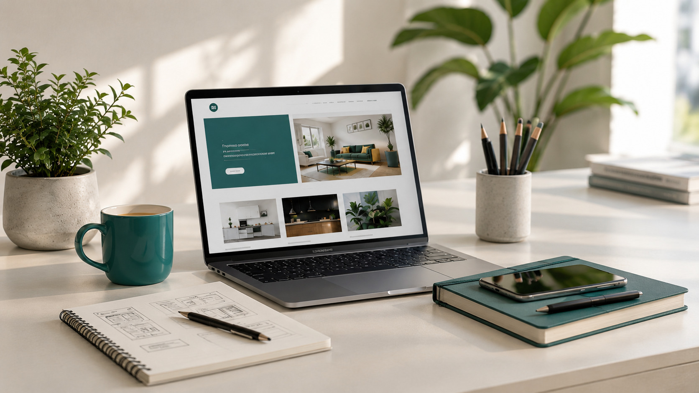

Proyecto HTML
Primera versión del sitio desarrollada utilizando HTML5 semántico y una estructura organizada.
Bienvenido a mi sitio web personal. En este espacio presento información sobre mí, mis conocimientos, proyectos y servicios relacionados con el desarrollo web.
Este sitio forma parte de mi proceso de aprendizaje y evoluciona a medida que incorporo nuevas herramientas y técnicas de desarrollo.
Ver mis proyectos
Me interesa el área de la tecnología y el desarrollo de software. Actualmente continúo incorporando conocimientos relacionados con HTML, CSS, SCSS y distintas herramientas utilizadas para construir sitios web.
Mi objetivo es seguir desarrollando proyectos que me permitan aplicar los conocimientos adquiridos y mejorar progresivamente mis habilidades.
Conocer más sobre míAlgunos de los proyectos realizados durante las distintas etapas del curso de Desarrollo Web.
Primera versión del sitio desarrollada utilizando HTML5 semántico y una estructura organizada.
Incorporación de colores, tipografías, fondos y estilos propios para construir una identidad visual.
Aplicación de Box Model y Flexbox para organizar el contenido y construir layouts flexibles.
Migración de los estilos a SCSS utilizando variables, mixins, nesting y una arquitectura basada en partials.
Una selección de imágenes que representan mi proceso de aprendizaje, diseño y desarrollo web.

Creación de interfaces organizadas, claras y visualmente coherentes.

Aplicación de HTML, CSS, SCSS y diferentes herramientas para construir sitios web.

Organización de ideas y estructuras antes de comenzar el desarrollo de una interfaz.
En esta sección podés conocer algunos de los aspectos que tengo en cuenta al desarrollar mis proyectos web.
Desarrollo estructuras que puedan adaptarse a diferentes tamaños de pantalla utilizando Flexbox, CSS Grid, Media Queries y Bootstrap.
Utilizo HTML semántico para organizar correctamente cada sección y mantener una estructura clara.
El proyecto utiliza SCSS organizado mediante partials, variables, mixins, extend, nesting, animaciones nativas y la librería AOS.